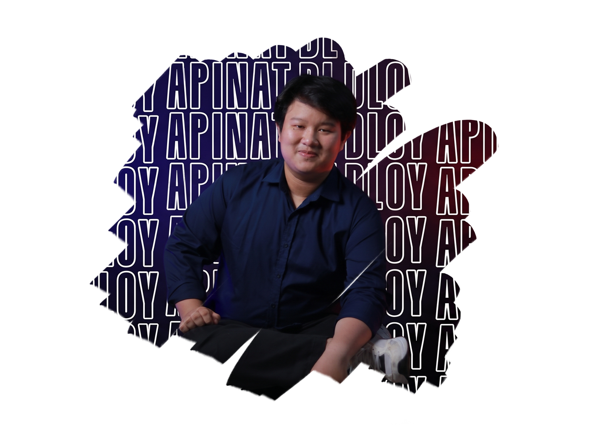
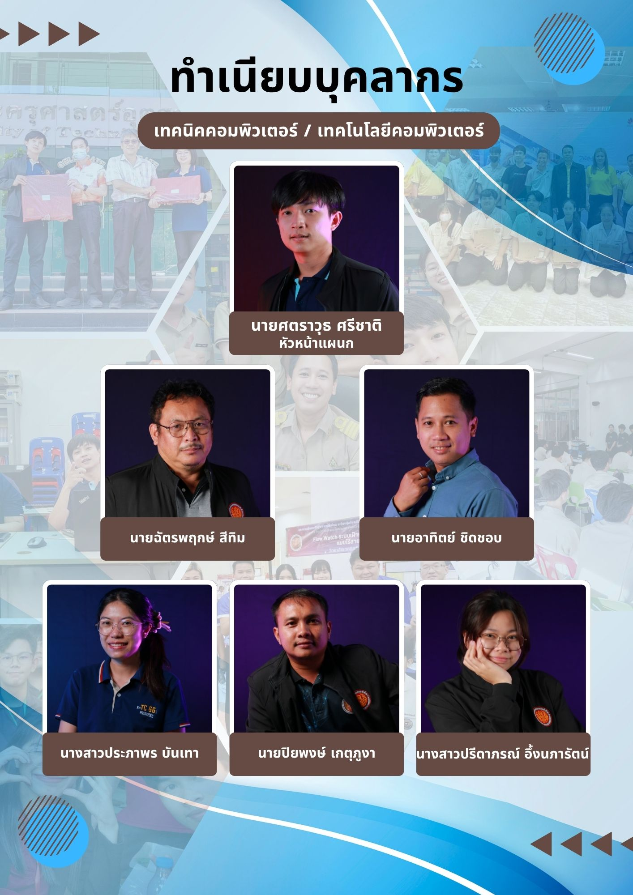
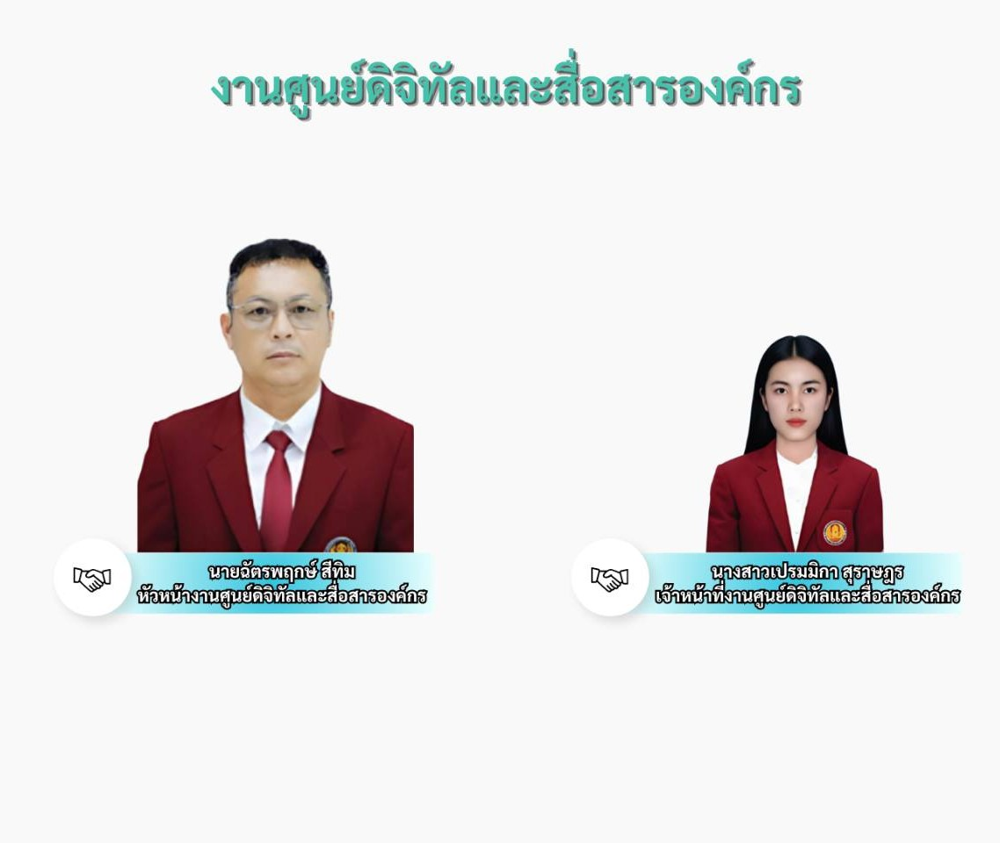

[หัวข้อปัญหาที่ 1]
[การได้ลองใช้อุปกรณ์ที่ยังไม่เคยใช้ก่อน]
วิธีแก้ไข / บทเรียนที่ได้: [วิธีการเเก้ไขคือศึกษาจากอินเตอร์เน็ตหรือไม่การขอคำเเนะนำจากพี่เลี้ยง]
รวบรวมงาน ทักษะ และเรื่องราวตลอดการฝึกงาน
บันทึกไว้ทีละสัปดาห์
เหมือนสมุดภาคสนามเล่มหนึ่ง

แต่ละการ์ดคือหนึ่งสัปดาห์ในสมุดบันทึก — คลิกที่การ์ดเพื่อดูรายละเอียดรายวัน
แผนก: เทคนิคคอมพิวเตอร์/เทคโนโลยีคอมพิวเตอร์ เเละ งานศูนย์ดิจิทัลเเละสื่อสารองค์กร
ที่อยู่: 85 ซอย จันทคามวิถี ตำบลวัดใหม่ อำเภอเมืองจันทบุรี จันทบุรี 22000
พี่เลี้ยง/ผู้ควบคุมงาน: นายฉัตรพฤกษ์ สีทิม


[การได้ลองใช้อุปกรณ์ที่ยังไม่เคยใช้ก่อน]
วิธีแก้ไข / บทเรียนที่ได้: [วิธีการเเก้ไขคือศึกษาจากอินเตอร์เน็ตหรือไม่การขอคำเเนะนำจากพี่เลี้ยง]
[การออกเเเบบเว็บไซต์ที่ทำได้ไม่ดี]
วิธีแก้ไข / บทเรียนที่ได้: [เรียนรู้จากสิ่งที่ผิดพลาดเเละศึกษาในการออกเเบบเว็บไซต์เเล้วนำกลับมาปรับปรุงเว็บไซต์ให้ดีขึ้น]
[ภาพรวมเเล้วผมก็เป็นศิษย์เก่าที่รู้จักอาจารย์หลายๆคนเเล้วเเต่ก็ได้เรียนรู้อะไรใหม่ๆ จากการได้ลอง ให้การที่ให้ลงมือทำ เช่น การทำ Server การสอบกับนักศึกษา การสไปลซ์สายไฟเบอร์ออปติก เป็นต้น ในที่นี้ผมประทับใจมากทั้ง การสนับสนุนของอาจารย์ การได้เรียนรู้จากประสบการณ์จริง เเละการที่ได้กลับไปฝึกงานที่ตัวเองได้จบมาครับ]